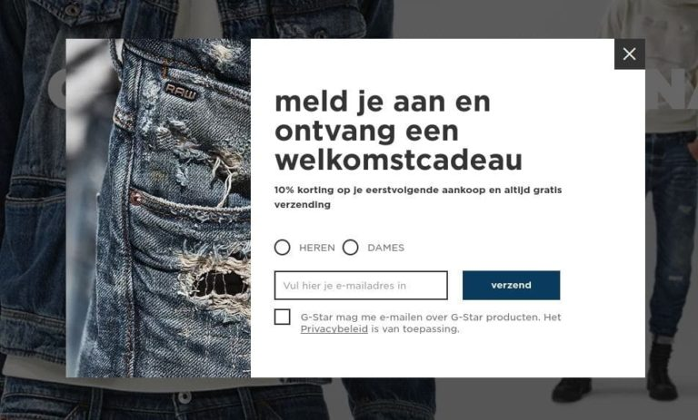
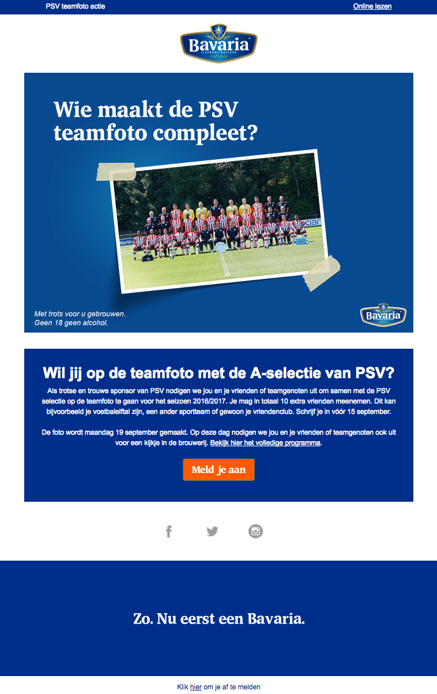
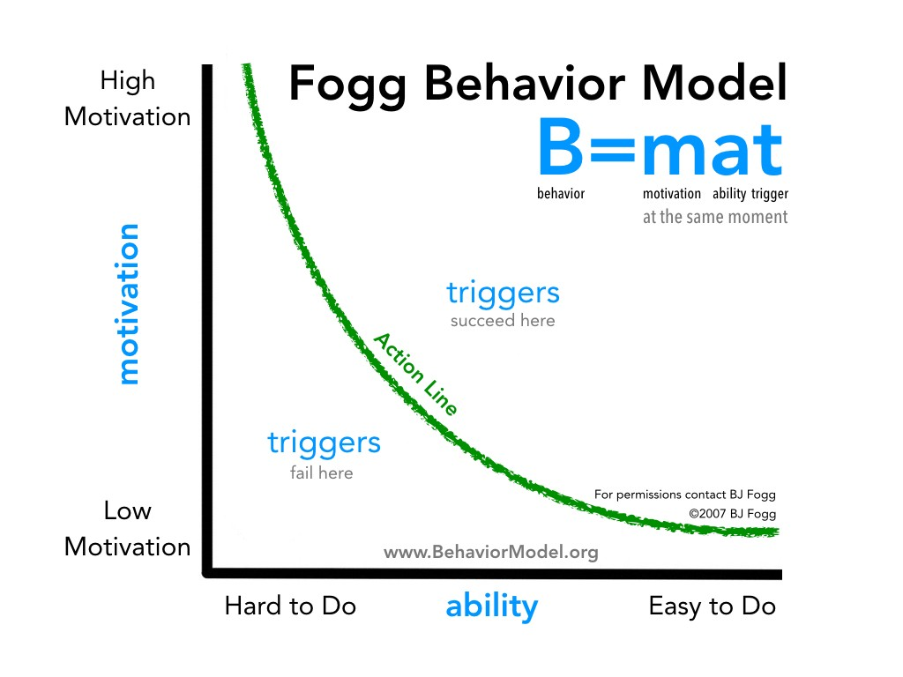

Wie is Robert Cialdini?
Robert Cialdini is hoogleraar psychologie en marketing aan de Universiteit van Arizona. Hij is expert als het gaat om overtuigen en heeft hier dan ook een boek over geschreven ‘De 6 geheimen van het overtuigen’. Hierin worden 6 overtuigings principes besproken die nu door vele gebruikt worden. In 2016 heeft hij opnieuw een boek geschreven waarin hij zijn 7e principe toevoegt, namelijk ‘eenheid’.
De 7 overtuigings principes
Sociale bewijskracht
Mensen zijn altijd opzoek naar een bevestiging van de kwaliteit dat een dienst of product beweert te hebben, voordat ze een aankoop doen.

Wederkerigheid
Iets extra’s doen voor de doelgroep, zodat zij eerder geneigd zijn iets terug te doen voor jou.
Commitment en consistentie
Mensen stapsgewijs enthousiast maken voor je merk (commitment) en deze aandacht vast houden (consistentie).

Sympathie
Mensen kiezen graag voor een bedrijf waar zij sympathie voor hebben. Deze sympathie voor een merk wordt vaak gecreëerd door enthousiaste en/of positieve verhalen uit hun omgeving.
Autoriteit
Mensen doen graag aankopen bij bedrijven die goed aangeschreven staan en als expert in hun vakgebied bekend staan. Manieren om autoriteit aan te tonen zijn bijvoorbeeld nominaties, gewonnen prijzen of keurmerken.

Schaarste
Wanneer een product of dienst maar in een beperkte hoeveelheid aanwezig is of maar tot een bepaalde datum aangeschaft kan worden, krijgt het extra aantrekkingskracht. Mensen zijn gevoelig voor deze schaarste en worden hebberig. Ze krijgen het gevoel dat ze iets speciaals kunnen kopen en ze willen de kans hierop niet mislopen.

Eenheid
Mensen hebben de behoefte om zich te kunnen identificeren met een bepaalde groep, om ergens bij te horen. Ze worden enthousiast van onderwerpen of personen waar zij zich in kunnen identificeren of herkennen.
Wie is Nir Eyal?
Een Amerikaanse auteur van het boek ‘Hooked: How to Build Habit-Forming Products’.
4 fases van het hooked model
Trigger:
External trigger:
Dit zijn triggers die expliciet onze volgende actie bepalen. Dit zijn triggers zoals notificaties, e-mail reminders, pop-ups en call-to-action buttons.
Internal trigger:
Interne triggers geven ook onze volgende actie aan, maar in tegenstelling tot externe triggers zit de informatie over wat te2 doen niet letterlijk in de trigger, maar eerder via een associatie met deze trigger. Voorbeelden zijn mensen, plekken, emoties, situaties en routines.
Een ander voorbeeld is het hebben van negatieve emoties. Deze werken het beste als dit terugkerende emoties zijn. Triggers kunnen dan een tijdelijke opluchting geven.
Nir geeft een paar voorbeelden van bedrijven en emotionele triggers:
-
We voelen ons eenzaam: Facebook
-
We zijn onzeker: Google
-
We vervelen ons: Youtube
Action (actie):
Deze stap richt zich op het zorgen dat gebruikers op triggers reageren. Het is belangrijk om de actie die volgt op de trigger zo makkelijk mogelijk uit te voeren is en dat de gebruiker gemotiveerd is om de actie uit te voeren. De combinatie van deze componenten zorgt er voor dat gedrag sneller uitgevoerd wordt. Simpele acties en gedrag zijn bijvoorbeeld scrolls en clicks die naar een beloning leiden.
Variable reward (beloning):
Na het uitvoeren van de actie volgt de beloning. Wanneer de gebruikers beloond worden voor het gebruiken van een product of dienst zijn ze sneller geneigd dit product of deze dienst vaker te gebruiken. Hoe vaker deze product of dienst gebruikt wordt hoe meer dit een gewoonte wordt. Voor gedrag van mensen geldt: gedrag = motivatie + vermogen + trigger. Belangrijk is dat je varieert in belonen om gebruikers gretig te houden.
Investment (investering):
Hierbij gaat het om de investering die een gebruiker doet bij het gebruiken van een product of dienst. Denk aan het investeren van tijd, geld, fysieke acties, hersengebruik, sociale afwijking en non-routine. Het behalen van de volgende fase van het product of de dienst wordt vergroot wanner gebruikers investeren. Deze kleine investeringen zorgen ervoor dat het product of de dienst meer waarde krijgt voor de gebruikers en de gebruikers sneller terugkeren. De investeringen moeten uiteindelijk leiden tot nieuwe triggers, zodat de gebruikers het proces opnieuw kunnen doorlopen.
Dit kan op twee manieren:
-
De investeringen vertegenwoordigen een waarde. Zoals verbeteringen in gebruiksgemak en het product. Hierdoor krijgt de gebruiker bijvoorbeeld meer contact, meer data, meer volgers en verbeterde resultaten. De gebruiker komt terug omdat het product meer waarde heeft en er een investering is gedaan.
-
Inzetten van de volgende trigger in de ‘hook’. Als gebruikers hetzelfde probleem/emotie blijft ervaren en jouw product is de oplossing, dan komen ze terug.
Wie is BJ Fogg?
B.J Fogg is gedragswetenschapper, auteur en de oprichter en directeur van Stanford Behavior Design Lab. Hij was de eerste wetenschapper die met de term ‘captologie’ (Computers As Persuasive Technologies) kwam. Daarbij heeft hij ‘the behavior model’ (FBM) opgezet.
Behavior model
Volgens BJ Fogg’s model hebben drie factoren invloed op het plaatsvinden van een bepaald gedrag. Deze drie factoren moeten samenkomen om dit bepaalde gedrag daadwerkelijk plaats te laten vinden. Wanneer er één van deze factoren ontbreekt vind het bepaalde gedrag niet plaats.
Motivatie
Wanneer iemand een hoge motivatie heeft is hij/zij sneller in staat moeilijke dingen te doen dan wanneer iemand een lage motivatie heeft.
Ability
Hierbij focust het model zich op de eenvoud. Door een actie op te delen in subacties of door weerstand weg te halen bereik je eenvoud en neigt iemand sneller om een bepaalde actie daadwerkelijk uit te voeren.
Trigger
Deze factor zet iemand aan tot een bepaalde actie. Denk hier bijvoorbeeld aan een Call To Action of een pop-up.
